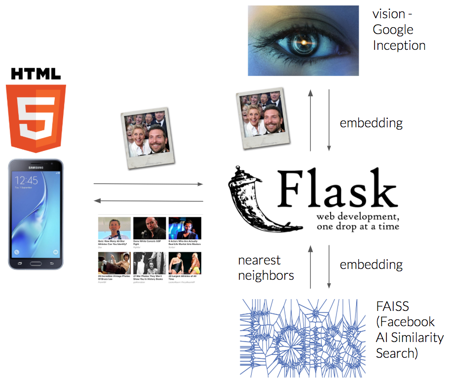

Imagine you’re walking down the street and you see a nice car you’re thinking of buying. Just by pointing your phone camera, you can see relevant content about that car. How cool is that?!
That was our team’s idea that awarded us first place in the recent Taboola R&D hackathon aptly named — Taboola Zoom!
Every year Taboola holds a global R&D hackathon for its 350+ engineers aimed at creating ideas for cool potential products or just some fun experiments in general.
This year, 33 teams worked for 36 hours to come up with ideas that are both awesome and helpful to Taboola. Some of the highlights included a tool that can accurately predict the users’ gender based on their browsing activity and an integration to social networks for Taboola Feed.
Our team decided to create an AR (Augmented Reality) application that allows a user to get content recommendations, much like Taboola’s recommendations widget, based on whatever they’re pointing their phone camera at.
What is Zoom?

The app itself is an AR experience similar to that of Google Glass, which allows you to interact with the world using your phone camera. Using the app, one just needs to point their camera onto an object to immediately get a list of stories from the web related to that object.
To make this idea a reality we used technologies from several domains — AI, Web Applications and Microservices.
Under the Hood

The flow is pretty simple:
- The user opens a web application on his phone — an HTML5 page that behaves like a native app.
- The app sends a screenshot of the captured video every second to a remote server.
- The server processes the image using computer vision technologies.
- The server searches for web articles with thumbnails that are the most similar to the processed image.
- The retrieved images are filtered using a similarity threshold, and are sent back to the user to be shown in a slick widget atop of the user’s display.
- When the user clicks the widget the relevant article is opened in the browser.
Zooming In
Each component of the system is implemented using different technologies:
Web Application
We decided to implement the user interface using HTML5, which allowed us access to native capabilities of the phone such as the camera. Additionally, we used WebRTC API and Canvas API.
Computer Vision Service

For every image, the service processes the image and returns an embedding — a numerical vector representing information extracted from the content of the image.
Understanding the content of an image is a well known problem with plenty of solutions. We chose to use Google’s Inception model, which is a DNN (Deep Neural Network) trained to classify the object found in an image.
A DNN is a construct of layers of neurons — similar to nodes in a graph, where each layer learns certain patterns in the image. The first layers learn to output simple patterns such as edges and corners, while the last layer outputs the type of the object, e.g. dog, cat etc.
We chose to use the output of the layer before last — as that produced the best results.
Database
The only component that was already available to us was Taboola’s internal database of articles, containing, among other things, the thumbnail and the article URL.
If such a database was not readily available to us, we could have just built our own by scraping images using a library such as BeautifulSoup.
Server
We used Flask as our web server. On startup, the server queries Taboola’s internal database of articles from the web. It then sends each image to the computer vision service, which returns an embedding. The embeddings are then stored into a designated data structure called FAISS (Facebook AI Similarity Search). It allows us to perform a nearest neighbors search.
Each image sent from the user is similarly transformed into an embedding. It is then used as a query to the above data structure to retrieve its nearest embeddings, meaning, images with similar patterns and content. Only images which are considered similar above a predefined threshold are then returned to the user.
So to recap, the entire architecture relies on three main components:
- web application
- computer vision service
- articles database
Do it Yourself

The entire project was developed in under 36 hours by a team of 5 people.
This app touches several interesting and exciting domains that are “hot” in the industry — AR and AI. It was a breeze to implement thanks to the commonly available tools and libraries.
If there’s only one thing we want you to take from this is that it’s not that difficult.
We invite you to be aware of the potential that lies in these domains and to be on the lookout for interesting and exciting ideas. Once you find one, go and have your own private hackathon!
Finally
If you want to play around with the app, open https://zoom.taboola.com on your phone — use Chrome on Android and Safari on iOS, and try hovering over different objects to see the various results — keep in mind this is a pre-alpha hackathon project.
We want to thank our wonderful teammates who worked tirelessly to create this amazing app –
Amir Keren, Yoel Zeldes, Elina Revzin, Aviv Rotman and Ofri Mann.
Originally published at engineering.taboola.com by me and Amir Keren.
Comments !